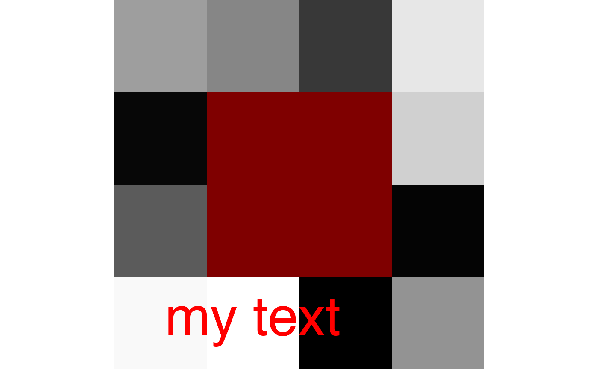

plot.antsImage.RdThis is a plotting utility for antsImage types with a background and color overlay option. Useful for displaying statistical results overlaid on a background image.
# S3 method for antsImage
plot(
x,
y = NULL,
color.img = "white",
color.overlay = c("jet", "red", "blue", "green", "yellow", "viridis", "magma",
"plasma", "inferno"),
axis = 2,
slices,
colorbar = FALSE,
title.colorbar,
title.img,
title.line = NA,
color.colorbar,
window.img,
window.overlay,
quality = 2,
outname = NA,
alpha = 1,
direction = 1,
begin = 0,
end = 1,
newwindow = FALSE,
nslices = 10,
domainImageMap = NULL,
ncolumns = 4,
useAbsoluteScale = FALSE,
doCropping = TRUE,
text,
...
)the reference image on which to overlay.
image or list of images to use as overlays.
color for main image.
the color for the overlay , e.g c('blue','red') length of this list should match the image list.
the axis to slice (1 , 2 or 3)
vector of slices to plot (e.g., c(10, 15, 20))
make colorbar?
title for colorbar
title for main image (not displayed when file is saved with outname)
title vertical displacement (irrelevant when a file is saved with outname)
color scale to use for colorbar
lower and upper thresholds for display of main image
lower and upper thresholds for display of overlay.
if you set window.overlay = c( 0, 100 ) and useAbsoluteScale=T
then the image overlay will map into that range. otherswise, the min and
max of the image will be used.
integer quality magnification factor 1 => large (e.g. 10)
name of output file if you want to write result to file, e.g.
plot.jpg.
opacity
Sets the order of colors in the scale. If 1, the default, colors are ordered from darkest to lightest. If -1, the order of colors is reversed.
The (corrected) hue in [0,1] at which the viridis colormap begins.
The (corrected) hue in [0,1] at which the viridis colormap ends
boolean controlling if we open a new device for this plot
number of slices to view
this input antsImage or list contains a reference image
(domainImage) and optional reference mapping named domainMap.
these will be used to map the input image(s) to this antsImage space before
plotting. this is useful for non-standard image orientations.
number of columns in plot
boolean determines whether dynamic range is maximized when visualizing overlays
apply cropping, defaults to TRUE
vector containing x, y, label, cex and color values passed to
text command, e.g. txt=list(x=0,y=0,label='my text',cex=2,col='red')
other parameters
output is plot to standard R window
img <- makeImage(c(4, 4), rnorm(4 * 4))
mask <- makeImage(
c(4, 4),
as.matrix(c(
0, 0, 0, 0,
0, 1, 1, 0,
0, 1, 1, 0,
0, 0, 0, 0
), nrow = 4)
)
plot(img, list(mask))
txt <- list(x = 2.5, y = 1.5, label = "my text", cex = 4, col = "red")
plot(img, list(mask), text = txt)

testthat::expect_error(plot(multi_component_image))
if (FALSE) {
img <- antsImageRead(getANTsRData("r16"))
betaVals <- rnorm(prod(dim(img)), 0, 20)
betaImg <- makeImage(dim(img), betaVals) %>% smoothImage(3.5)
betaImg[abs(betaImg) < 1.5] <- 0
plot(img, betaImg, window.img = range(img), window.overlay = range(betaImg))
mnit <- getANTsRData("mni")
mnit <- antsImageRead(mnit)
mniafn <- getANTsRData("mnia")
mnia <- antsImageRead(mniafn)
mnia <- thresholdImage(mnia, 22, 25)
mnia <- smoothImage(mnia, 1.5)
mnia2 <- antsImageRead(mniafn)
mnia2 <- thresholdImage(mnia2, 1, 4)
mnia2 <- smoothImage(mnia2, 1.5)
ofn <- paste(tempfile(), ".png", sep = "")
# write directly to a file
plot(mnit, list(mnia, mnia2),
slices = seq(50, 140, by = 5),
window.overlay = c(0.25, 1), axis = 2,
color.overlay = c("red", "blue"), outname = ofn
)
}